/* erik-madigan-heck - proofs */
12 plates. Deterministic overlays rendered by the composition-analysis skill.
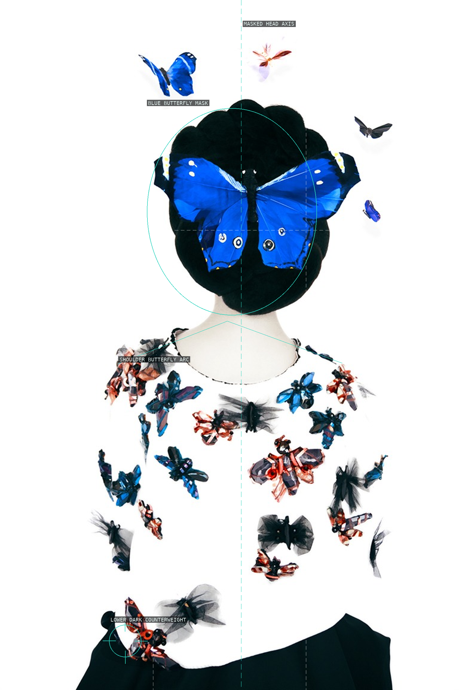
01-without-a-face-lanvin
The centered mask and repeated blue forms turn portraiture into a field of patterned signals.
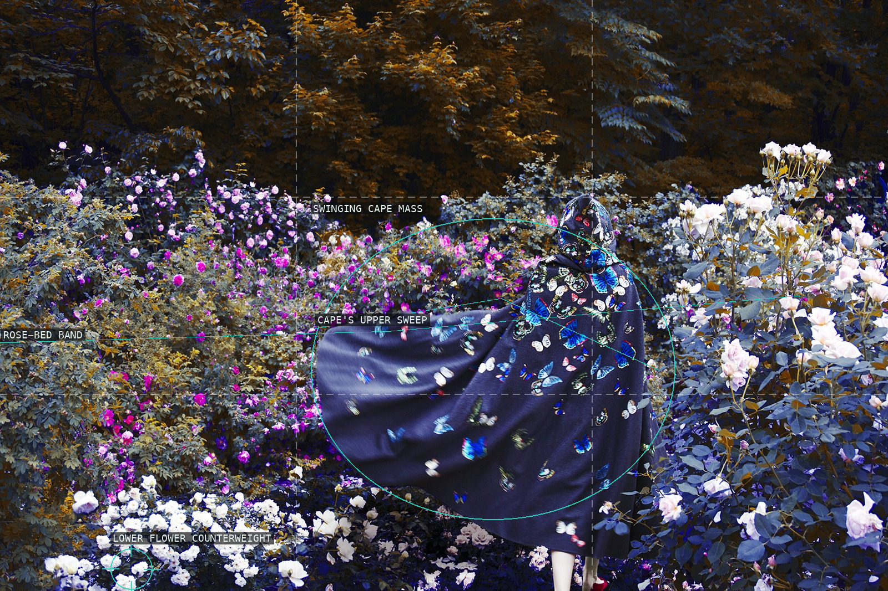
02-valentino
A dark butterfly-patterned cape becomes an animated mass inside a dense rose field.
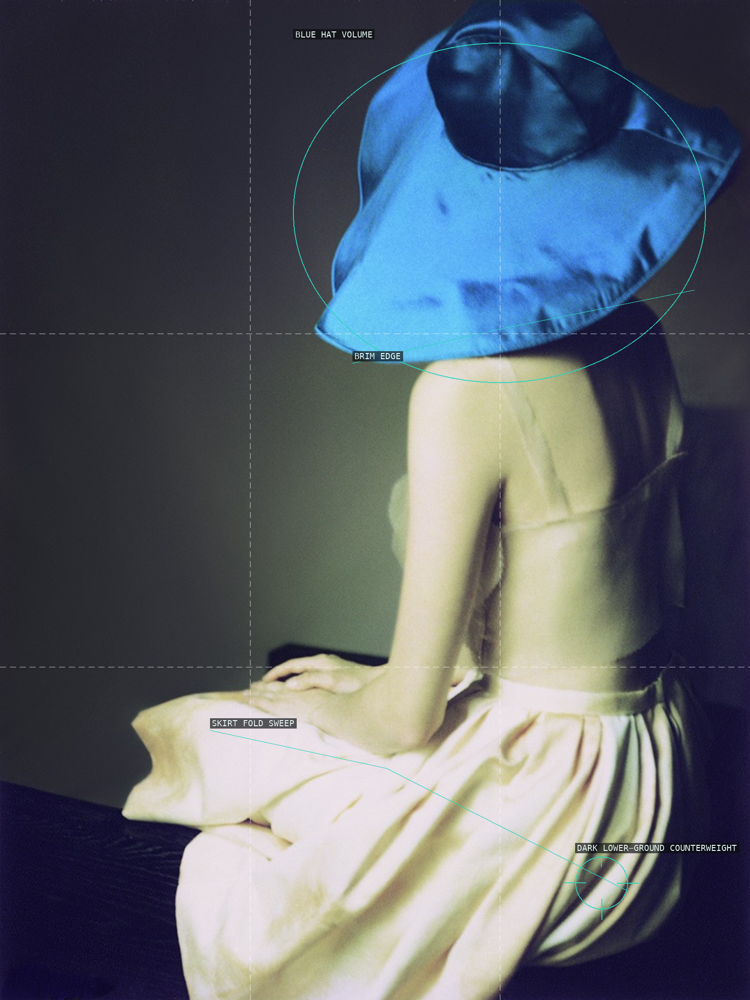
03-blue-hat
The oversized blue hat interrupts the seated figure's soft vertical descent.
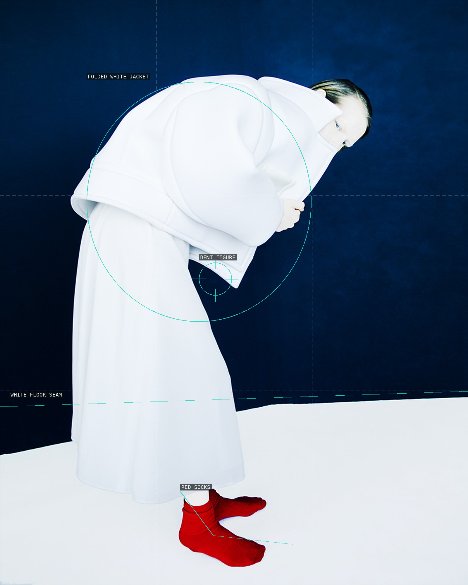
04-red-socks
A white figure is suspended between a blue field and a small, emphatic red base.
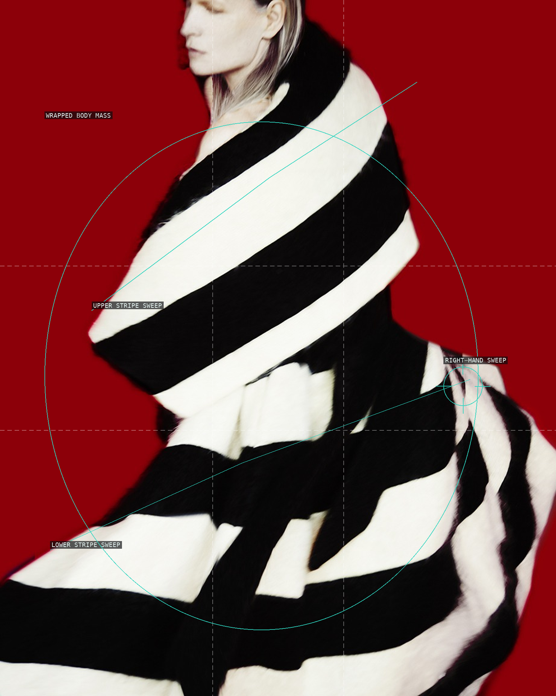
05-kirsten-owen
Broad black-and-white bands make the cropped body read as a moving graphic form.
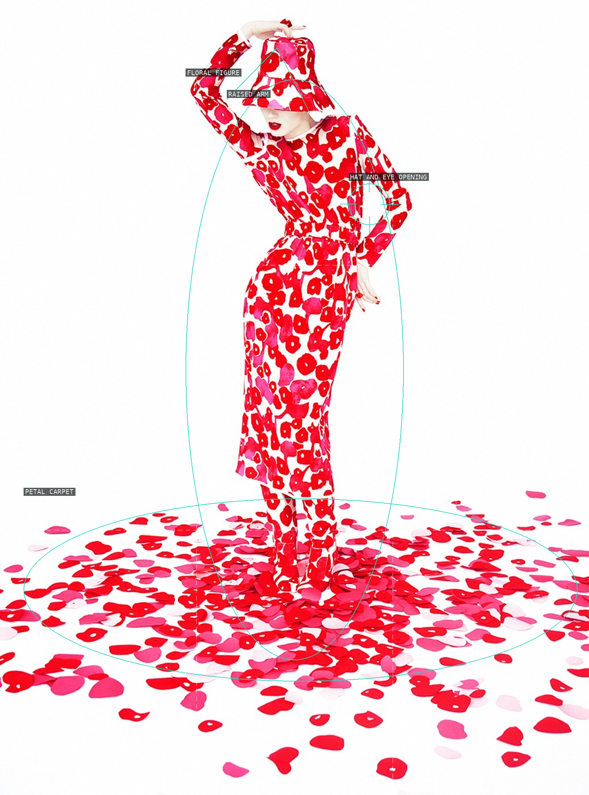
06-florals
Pattern repeats from hat to hem and spills outward as a low carpet of petals.
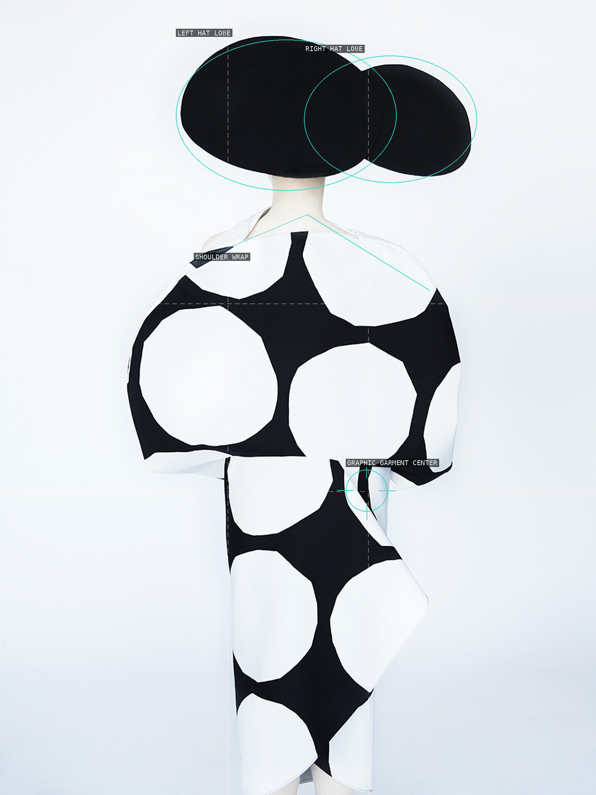
07-junya-watanabe
Two black hat lobes and oversized garment circles withhold the sitter's usual portrait cues.
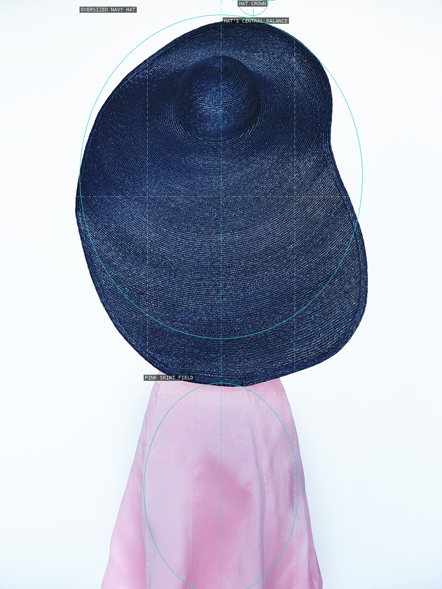
08-giorgio-armani
A single dark hat is enlarged into an almost abstract silhouette over a small pink skirt.
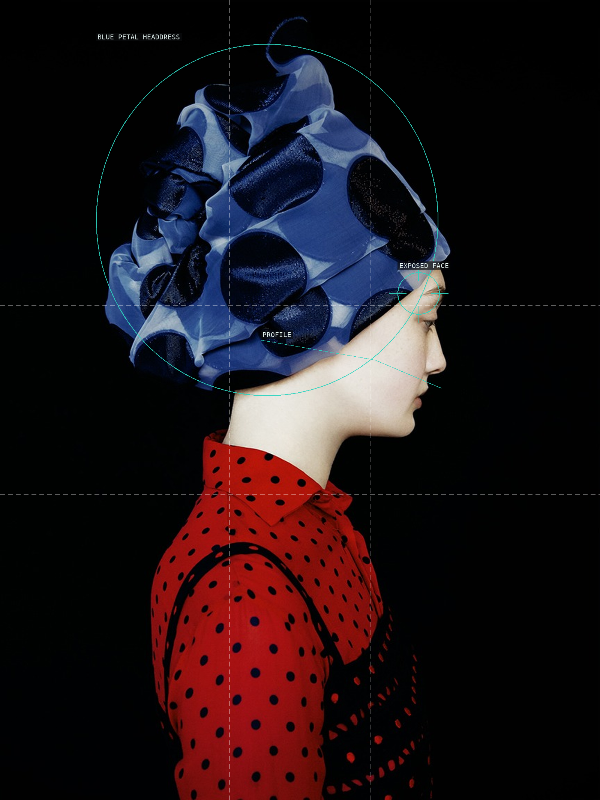
09-without-a-face-dior
An exposed profile appears only after the blue headpiece and red spotted garment have claimed the frame.
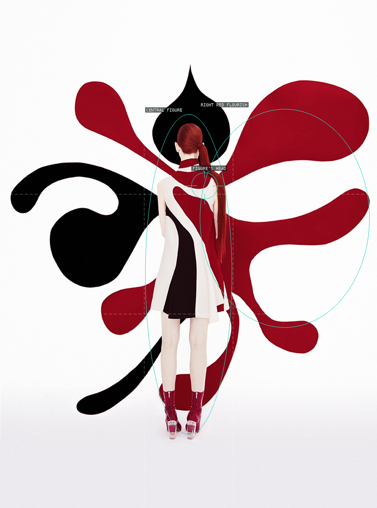
10-queen-of-hearts
A small centered figure becomes the pin around which red and black decorative forms spread.
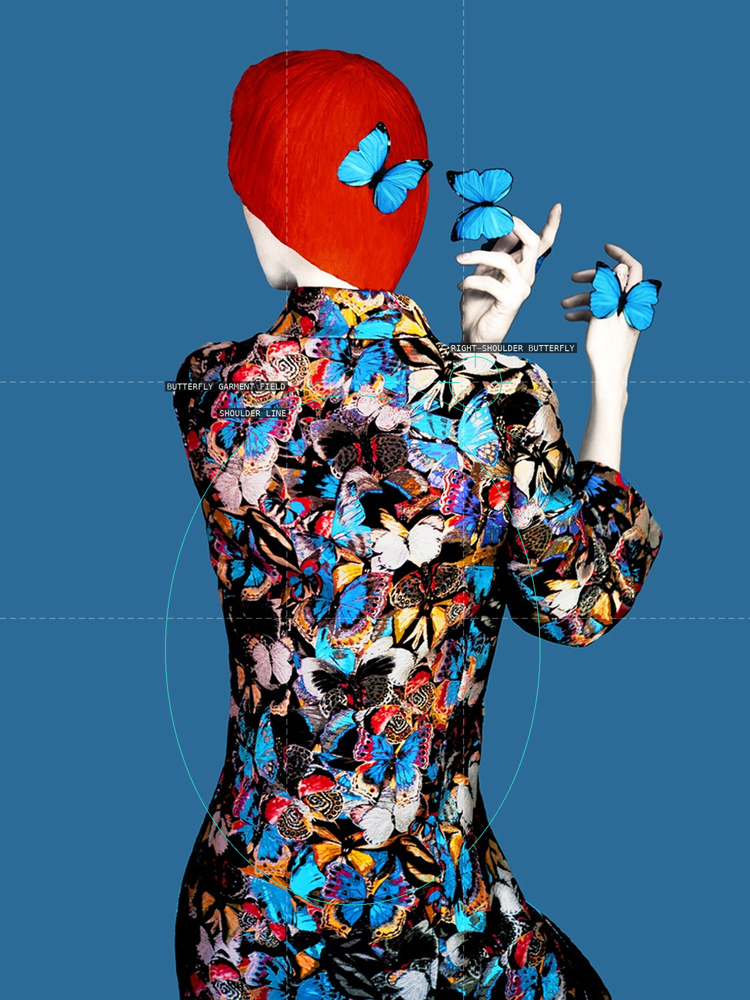
11-without-a-face-valentino
The raised hands and patterned torso organize the veiled figure as a converging butterfly field.
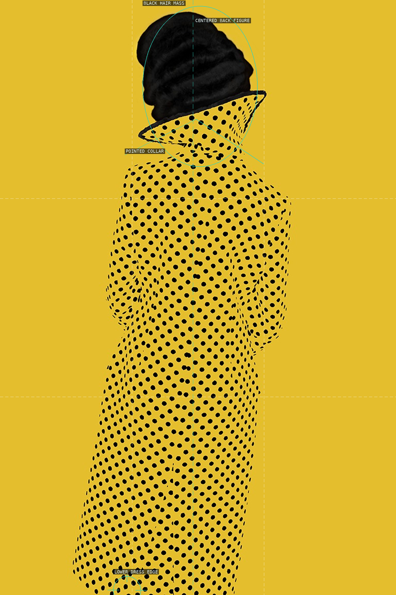
12-without-a-face-yellow
A centered dotted dress becomes a black-on-yellow field, with the collar breaking the figure's smooth silhouette.